토목기사 (2005-05-29 기출문제)
1과목: 응용역학
1. 『재료가 탄성적이고 Hooke의 법칙을 따르는 구조물에서 지점침하와 온도 변화가 없을 때 한 역계 Pn에 의해 변형되는 동안에 다른 역계 Pm가 하는 외적인 가상일은 Pm역계 에 의해 변형하는 동안에 Pn역계가 하는 외적인 가상일과 같다.』 이것을 무엇이라 하는가?
- 가상일의 원리
- 카스틸리아노의 정리
- 최소일의 정리
- 베티의 법칙
(정답률: 62%)

2. 그림과 같은 외팔보의 B점의 처짐δB으로 맞는 것은? (단, 외팔보 AB 의 휨강성계수는 3EI 이다) (문제 오류로 현재 복원중입니다. 보기 내용을 아시는 분들께서는 오류 신고를 통하여 보기 작성 부탁 드립니다. 정답은 1번입니다.)
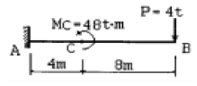
- 복원중
- 복원중
- 복원중
- 복원중
(정답률: 알수없음)
3. 그림(a)와 같은 하중이 그 진행방향을 바꾸지 아니하고, 그림(b)와 같은 단순보위를 통과 할때, 이 보에 절대 최대 휨 모멘트를 일어나게 하는 하중 9t의 위치는? (단, B 지점으로 부터 거리임)
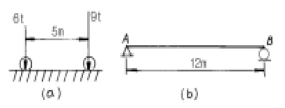
- 2m
- 5m
- 6m
- 7m
(정답률: 69%)
4. 그림과 같은 라멘 구조물의 A점에서 불균형 모멘트에 대한 부재 A1의 모멘트 분배율은?
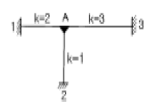
- 0.500
- 0.333
- 0.167
- 0.667
(정답률: 58%)
5. 다음 그림과 같이 방향이 서로 반대이고 평행한 두개의 힘이 A, B점에 작용하고 있을 때 두 힘의 합력의 작용점 위치는?
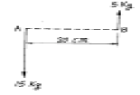
- A 점에서 오른쪽으로 5cm 되는 곳
- A 점에서 오른쪽으로 10cm 되는 곳
- A 점에서 왼쪽으로 5cm 되는 곳
- A 점에서 왼쪽으로 10cm 되는 곳
(정답률: 19%)
6. 다음과 같은 부재에서 AC사이의 전체 길이의 변화량 δ는 얼마인가? (단, 보는 균일하며 단면적 A와 탄성계수 E는 일정하다고 가정한다.) (문제 오류로 현재 복원중입니다. 보기 내용을 아시는 분들께서는 오류 신고를 통하여 보기 작성 부탁 드립니다. 정답은 3번입니다.)
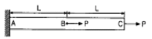
- 복원중
- 복원중
- 복원중
- 복원중
(정답률: 39%)
7. 단순보에 등분포하중과 집중하중이 작용할 경우 최대 모멘트 값은?
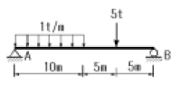
- 37.5 t·m
- 38.3 t·m
- 40.2 t·m
- 41.6 t·m
(정답률: 24%)
8. 무게 3000kg인 물체를 단면적이 2cm2인 1개의 동선과 양쪽에 단면적이 1cm2인 철선으로 매달았다면 철선과 동선의 인장응력 σs, σc 는 얼마인가? (단, 철선의 탄성계수 Es=2.1×106kg/cm2, 동선의 탄성계수 Ec=1.⑤×106kg/cm2이다.)
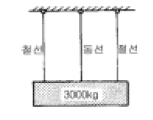
- σs = 1000kg/cm2 ,σc = 1000kg/cm2
- σs = 1000kg/cm2 ,σc = 500kg/cm2
- σs = 500kg/cm2 ,σc = 1500kgcm2
- σs = 500kg/cm2 ,σc = 500kg/cm2
(정답률: 58%)
9. 다음 구조물의 변형에너지의 크기는? (문제 오류로 현재 복원중입니다. 보기 내용을 아시는 분들께서는 오류 신고를 통하여 보기 작성 부탁 드립니다. 정답은 1번입니다.)
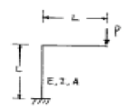
- 2*P^2*L^3/(3EI)+P^2*L/(2EA)
- P^2*L^3/(3EI)+P^2*L/(EA)
- P^2*L^3/(3EI)+P^2*L/(2EA)
- 2*P^2*L^3/(3EI)+P^2*L/(EA)
(정답률: 40%)
10. 오른쪽 그림과 같은 연속보에서 지점 모멘트 MB는? (단, EI는 일정하다.) (문제 오류로 현재 복원중입니다. 보기 내용을 아시는 분들께서는 오류 신고를 통하여 보기 작성 부탁 드립니다. 정답은 3번입니다.)
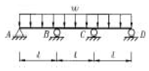
- 복원중
- 복원중
- 복원중
- 복원중
(정답률: 20%)
11. 직사각형단면으로 된 보의 단면적을 Acm2 , 전단력을 Vkg 이라 하면 최대 전단응력을 구한 값으로 맞는 것은? (문제 오류로 현재 복원중입니다. 보기 내용을 아시는 분들께서는 오류 신고를 통하여 보기 작성 부탁 드립니다. 정답은31번입니다.)
- 복원중
- 복원중
- 복원중
- 복원중
(정답률: 39%)
12. 끝단에 하중 P가 작용하는 그림과 같은 보에서 최대 처짐 δ가 발생하였다. 최대 처짐이 4δ가 되려면 보의 길이는? (단, EI는 일정하다.)
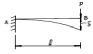
- ℓ의 약 1.2배가 되어야 한다.
- ℓ의 약 1.6배가 되어야 한다.
- ℓ의 약 2.0배가 되어야 한다.
- ℓ의 약 2.2배가 되어야 한다.
(정답률: 62%)
13. 다음 그림과 같이 일단고정, 타단 힌지의 장주에 중심축하중이 작용할 때 이 단면의 좌굴응력의 값은? (단, E=2.1×106kg/cm2이다.)
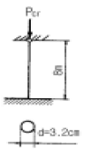
- 322.8kg/cm2
- 280.5kg/cm2
- 55.4kg/cm2
- 41.4kg/cm2
(정답률: 39%)
14. 그림과 같이 가운데가 비어있는 직사각형 단면 기둥의 길이가 L=10m일 때 이 기둥의 세장비는?
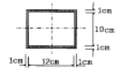
- 1.9
- 191.9
- 2.2
- 217.4
(정답률: 64%)
15. 그림과 같은 트러스의 사재D의 부재력은?
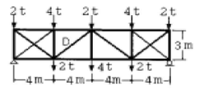
- 5 ton(인장)
- -5 ton(압축)
- 3.75 ton(인장)
- -3.75 ton(압축)
(정답률: 34%)
16. 그림과 같은 3 힌지(hinge) 아아치가 P=10t의 하중을 받고 있다. B지점에서 수평 반력은?
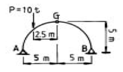
- 2.0 t
- 2.5 t
- 3.0 t
- 3.5 t
(정답률: 40%)
17. 단면의 성질에 대한 다음 설명 중 잘못된 것은?
- 단면2차 모멘트의 값은 항상 0보다 크다.
- 단면2차 극모멘트의 값은 항상 극을 원점으로 하는 두직교좌표축에 대한 단면2차 모멘트의 합과 같다.
- 도심축에 관한 단면1차 모멘트의 값은 항상 0이다.
- 단면 상승 모멘트의 값은 항상 0보다 크거나 같다.
(정답률: 60%)
18. 다음 그림과 같은 I형 단면보에 6t의 전단력이 작용할 때 상연(上緣)에서 5cm 아래인 지점에서의 전단응력은? (단, 단면 2차 모멘트는 100,000cm4 이다.)
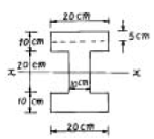
- 5.25 kg/cm2
- 9.0 kg/cm2
- 18.0 kg/cm2
- 20.25 kg/cm2
(정답률: 19%)
19. 다음 단면에 대한 관계식중 옳지 않은 것은? (문제 오류로 현재 복원중입니다. 보기 내용을 아시는 분들께서는 오류 신고를 통하여 보기 작성 부탁 드립니다. 정답은 3번입니다.)
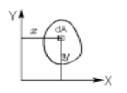
- 복원중
- 복원중
- 복원중
- 복원중
(정답률: 34%)
20. 다음 단순보의 반력 Rax 의 크기는?
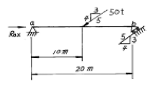
- Rax = 30.0 t
- Rax = 35.0 t
- Rax = 45.0 t
- Rax = 56.64 t
(정답률: 17%)
2과목: 측량학
21. 다음중 원격탐사(Romote Sensing)를 정의한 것으로 옳은 것은?
- 우주선에서 찍은 사진을 이용하여 지상에서 항공사진의 처리와 같은 방법으로 판독하는 기법
- 우주에 산재해 있는 물체의 고유 스펙트럼을 이용하여 구성성분을 지상의 레이다로 수집하여 처리하는 기법
- 지상에서 대상물체에 전자파를 발생시켜 그 반사판을 이용하여 측정하는 기법
- 센서를 이용하여 지표의 대상물에서 반사 또는 방사된 전자파를 측정하여 대상물에 관한 정보를 얻는 기법
(정답률: 56%)
22. 사진상의 연직점에 대한 설명으로 옳은 것은?
- 대물렌즈의 중심을 말한다.
- 렌즈의 중심으로부터 사진면에 내린 수선의 발
- 렌즈의 중심으로부터 지면에 내린 수선의 연장선과 사진면과의 교점
- 사진면에 직교되는 광선과 연직선이 만나는 점
(정답률: 53%)
23. 노선측량에서 단곡선을 설치할 때 정확도는 좋지 않으나 간단하고 신속하게 설치할수 있는 1/4 법은 다음 중 어느 방법을 이용한 것인가?
- 편각설치법
- 절선편거와 현편거에 의한 방법
- 중앙종거법
- 절선에 대한 지거에 의한 방법
(정답률: 22%)
24. 일반적으로 단열삼각망을 주로 사용할 수 있는 측량은?
- 시가지와 같이 정밀을 요하는 골조측량
- 복잡한 지형의 골조측량
- 광대한 지역의 지형측량
- 하천조사를 위한 골조측량
(정답률: 58%)
25. 다음 그림에 있어서 θ=30°11′00″, S=1,000(평면거리)일 때 C점의 X좌표는? (단, AB의 방위각은 89°49′00″, A점의 X좌표는 1,200m)
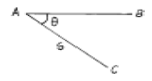
- 333.97m
- 500.00m
- 700.00m
- 866.03m
(정답률: 32%)
26. 직사각형의 두변 길이를 1/200 정확도로 관측하여 면적을 산출할 때 산출된 면적의 정확도는? (문제 오류로 현재 복원중입니다. 보기 내용을 아시는 분들께서는 오류 신고를 통하여 보기 작성 부탁 드립니다. 정답은 2번입니다.)
- 복원중
- 복원중
- 복원중
- 복원중
(정답률: 46%)
27. 다음 중 GPS의 특징에 대한 설명으로 옳지 않은 것은?
- 장거리 측량에 주로 이용된다.
- 관측점간의 시통이 필요하지 않다.
- 날씨에 영향을 많이 받는다.
- 고정밀도 측량이 가능하다.
(정답률: 57%)
28. 다음 그림의 유토곡선(mass curve)에서 하향구간인 A-C, E-F 구간이 의미하는 것은?
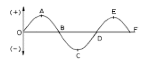
- 운반토량
- 운반거리
- 절토구간
- 성토구간
(정답률: 36%)
29. 다음은 교호수준측량의 결과이다. A점의 표고가 10m일 때 B점의 표고는?
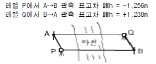
- 11.247m
- 11.238m
- 9.753m
- 8.753m
(정답률: 45%)
30. 측지좌표 기준계로서 SPOT이나 GPS에서 채택하고 있는 좌표계는?
- GRS 80
- WGS 72
- WGS 84
- U.T.M
(정답률: 47%)
31. 종방향 40km, 횡방향 30km인 토지를 축척 1:40000, 사진크기 23×23cm, 초점거리 160mm, 종중복도 60%, 횡중복도 30%로 촬영할 때 입체모델 수는?
- 55
- 45
- 35
- 25
(정답률: 20%)
32. 노선의 중심말뚝(20m간격)에 대한 횡단 측량 결과에 예정 노선의 단면을 넣어서 면적을 구한 결과 단면I의 면적 A1= 78m2, 단면Ⅱ의 면적 A2 = 132m2임을 알았다. 단면I과 단면Ⅱ간의 토량은?
- 2000m3
- 2100m3
- 2200m3
- 2500m3
(정답률: 55%)
33. 다음의 입체시에 대한 설명중 옳은 것은?
- 다른 조건이 동일할 때 초점거리가 긴 사진기에 의한 입체상이 짧은 사진기의 입체상보다 높게 보인다.
- 한쌍의 입체사진은 촬영코스 방향과 중복도만 유지하면 두 사진의 축척이 20% 정도 달라도 상관없다.
- 다른 조건이 동일할 때 기선의 길이를 길게 하는 것이 짧은 경우보다 과고감이 크게 된다.
- 입체상의 변화는 기선고도비에 영향을 받지 않는다.
(정답률: 37%)
34. 다음 중 완화곡선의 종류가 아닌 것은?
- 렘니스케이트 곡선
- 배향 곡선
- 클로소이드 곡선
- 반파장 체감곡선
(정답률: 40%)
35. 하천의 수애선은 어떤 수위에 의하여 정해지는가?
- 평수위
- 저수위
- 갈수위
- 고수위
(정답률: 53%)
36. 촬영고도 2,500m에서 촬영된 인접한 2매의 수직사진이 있다. 이 사진의 주점기선장이 10cm라면, 기준면에서 비고 50m인 지점의 시차차는?
- 1mm
- 2mm
- 3mm
- 4mm
(정답률: 34%)
37. 캔트를 계산할 때 같은 조건에서 곡선 반지름만을 2배로하면 캔트는 몇 배가 되는가?
- 4배
- 2배
- 1/2배
- 1/4배
(정답률: 53%)
38. 노선측량에서 그림과 같은 단곡선을 설치할 때 곡선의 반지름(R)=100m, 교각(I)=60°00′라면 다음 중 옳지 않은 것은?
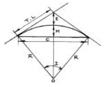
- 접선장(T.L.) = 57.7m
- 장현(C) = 100m
- 중앙종거(M) = 13.4m
- 외할(E) = 25.5m
(정답률: 37%)
39. 다음의 각관측 방법 중 배각법에 관한 설명으로 옳지 않은 것은? (여기서, α:시준오차, β:읽기오차, n:반복회수) (문제 오류로 현재 복원중입니다. 보기 내용을 아시는 분들께서는 오류 신고를 통하여 보기 작성 부탁 드립니다. 정답은 1번입니다.)
- 수평각 관측법 중 가장 정확한 방법으로 1등 삼각 측량에 주로 이용된다.
- 방향각법에 비하여 읽기 오차의 영향을 적게 받는다.
- 복원중
- 1개의 각을 2회이상 반복관측하여 관측한 각도를 모두 더하여 평균을 구하는 방법이다.
(정답률: 알수없음)
40. 등고선의 성질을 설명한 것 중 옳지 않은 것은?
- 동일 등고선상의 모든 점은 기준면으로부터 같은 높이에 있다.
- 지표면의 경사가 같을 때는 등고선의 간격은 같고 평행하다.
- 등고선은 도면내 또는 밖에서 폐합한다.
- 높이가 다른 두 등고선은 절대로 교차하지 않는다.
(정답률: 39%)
3과목: 수리학 및 수문학
41. 관측점 x의 우량계 고장으로 1개월 동안 강우량 관측을 할 수 없었다. 이 기간 동안에 집중 호우가 발생하여 인접 관측점 A, B, C에 다음과 같이 강우량이 측정되었다면 결측 기간 동안 x 관측점의 강우량은?
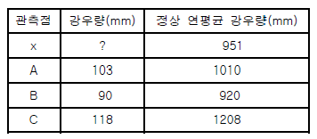
- 91.3mm
- 92.3mm
- 93.3mm
- 94.3mm
(정답률: 25%)
42. 물이 들어있고 뚜껑이 없는 수조가 14.7m/sec2의 속도로 수직상향으로 가속되고 있을 때 수조 속 깊이 2.0m에서의 압력은? (단, 물의 단위중량은 1.0ton/m3이다.)
- 1.0ton/m2
- 3.0ton/m2
- 5.0ton/m2
- 7.0ton/m2
(정답률: 23%)
43. 개수로의 흐름 상태에 대한 설명으로 옳은 것은?
- 상류의 수심은 한계수심보다 작다.
- 수로바닥을 기준으로 하는 에너지를 비에너지라 한다.
- 도수 전후의 수면차가 클수록 감세효과는 작아진다.
- 사류는 Froude수가 1보다 작다.
(정답률: 53%)
44. 그림과 같이 면적 500m2의 여과지가 있다. 투수계수 K가 0.120㎝/sec 일 때 여과량은 얼마인가?
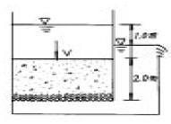
- 30m3/sec
- 3m3/sec
- 0.3m3/sec
- 0.03m3/sec
(정답률: 42%)
45. 임의의 면에 작용하는 정수압의 작용방향을 옳게 설명한 것은?
- 정수압은 수면에 대하여 수평방향으로 작용한다.
- 정수압은 수면에 대하여 수직방향으로 작용한다.
- 정수압의 수직압은 존재하지 않는다.
- 정수압은 임의의 면에 직각으로 작용한다.
(정답률: 59%)
46. DAD 해석에 관계되는 요소로 짝지어진 것은?
- 수심, 하천 단면적, 홍수기간
- 강우깊이, 면적, 지속기간
- 적설량, 분포면적, 적설일수
- 강우량, 유수단면적, 최대수심
(정답률: 46%)
47. 길이 5m, 직경 8m의 원주가 수평으로 놓여 있을 경우 원주의 한쪽에 윗단까지 물이 차 있다면 이 원주에 작용하는 전수압은?
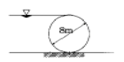
- 190 ton
- 196 ton
- 200 ton
- 204 ton
(정답률: 16%)
48. 유체의 밀도￠, 점성계수°, 벽면의 마찰력￥o , 평균유속을 V라고 할 때 마찰속도u* 로 옳은 것은? (문제 오류로 현재 복원중입니다. 보기 내용을 아시는 분들께서는 오류 신고를 통하여 보기 작성 부탁 드립니다. 정답은 2번입니다.)
- 복원중
- 복원중
- 복원중
- 복원중
(정답률: 45%)
49. 원관의 흐름에서 수심이 반지름의 깊이로 흐를 때 경심은?
- D/4
- D/3
- D/2
- D/5
(정답률: 56%)
50. 합성단위유량도를 작성하기 위한 방법의 하나인 Snyder법에서 첨두유량 산정에 필요한 매개변수(parameter)로만 짝지어진 것은?
- 유역면적, 지체시간
- 도달시간, 유역면적
- 유로연장, 지체시간
- 유로연장, 도달시간
(정답률: 10%)
51. 유효강우량(effective rainfall)에 대한 설명으로 옳은 것은?
- 지표면 유출에 해당하는 강우량이다.
- 직접유출에 해당하는 강우량이다.
- 기저유출에 해당하는 강우량이다.
- 총 유출에 해당하는 강우량이다.
(정답률: 알수없음)
52. 저수지의 측벽에 폭 20㎝, 높이 5㎝의 직사각형 오리피스를 설치하여 유량 200L/sec를 유출시키려고 할 때 수면으로부터의 오리피스 설치 위치는? (단, 유량계수 C = 0.62)
- 33m
- 43m
- 53m
- 63m
(정답률: 45%)
53. 1시간 간격의 강우량이 10㎜, 20㎜, 40㎜, 10㎜이다. 직접유출이 50%일 때 Φ-index를 구한 값은?
- 6㎜/hr
- 8㎜/hr
- 10㎜/hr
- 12㎜/hr
(정답률: 36%)
54. 사각형 광폭 수로에서 한계류에 대한 설명으로 틀린 것은?
- 주어진 유량에 대해 비에너지가 최소이다.
- 주어진 비에너지에 대해 유량이 최대이다.
- 한계수심은 비에너지의 2/3이다.
- 주어진 유량에 대해 비력이 최대이다.
(정답률: 알수없음)
55. 수리학적 완전상사를 이루기 위한 조건이 아닌 것은?
- 기하학적 상사(geometric similarity)
- 운동학적 상사(kinematic similarity)
- 동역학적 상사(dynamic similarity)
- 정역학적 상사(static similarity)
(정답률: 20%)
56. 피압 지하수를 설명한 것으로 옳은 것은?
- 지하수와 공기가 접해있는 지하수면을 가지는 지하수
- 두 개의 불투수층 사이에 끼어 있는 지하수면이 없는 지하수
- 하상 밑의 지하수
- 한 수원이나 조직에서 다른 지역으로 보내는 지하수
(정답률: 48%)
57. 직경 1mm인 모세관의 경우에 모관상승 높이는? (단, 물의 표면장력은 74dyne/㎝, 접촉각은 8°)
- 30mm
- 25mm
- 20mm
- 15mm
(정답률: 45%)
58. k가 엄격히 말하면 월류수심 h 등에 관한 함수이지만, 근사적으로 상수라 가정하면 직사각형 위어(Weir)의 유량 Q과 h의 일반적인 관계로 옳은 것은?
- Q = k·h
- Q = k·h3/2
- Q = k·h1/2
- Q = k·h2/3
(정답률: 74%)
59. 다음의 손실계수 중 특별한 형상이 아닌 경우, 일반적으로 그 값이 가장 큰 것은?
- 입구 손실계수(fe)
- 단면 급확대 손실계수(fse)
- 단면 급축소 손실계수(fsc)
- 출구 손실계수(fo)
(정답률: 36%)
60. 개수로와 비교할 때 관수로에 대한 설명으로 틀린 것은?
- 점성력의 영향을 크게 받는다.
- 관 내에 물이 충만하게 흐르는 흐름이다.
- 압력차에 의하여 흐른다.
- 중력의 영향에 지배된다.
(정답률: 36%)
4과목: 철근콘크리트 및 강구조
61. 콘크리트 구조설계기준에서는 띠철근으로 보강된(사각형) 기둥에 대해서는 감소계수 ø=0.7, 나선철근으로 보강된 기둥(원형)에 대해서는 ø=0.75로 하도록 하였다. 그 이유에 대한 설명으로 가장 적당한 것은?
- 콘크리트의 압축강도 측정시 공시체의 형태가 원형이기 때문이다.
- 나선철근으로 보강된 기둥은 띠철근으로 보강된 기둥보다 연성을 나타내기 때문이다.
- 나선철근으로 보강된 기둥은 띠철근으로 보강된 기둥보다 골재분리현상이 적기 때문이다.
- 같은 조건(콘크리트단면적, 철근단면적)에서 사각형 기둥이 원형기둥보다 큰 하중을 견딜수 있기 때문이다.
(정답률: 58%)
62. 순단면이 볼트의 구멍 하나를 제외한 단면(즉,A-B-C 단면)과 같도록 피치(s)를 결정하면? (단, 볼트의 직경은 19mm이다.)
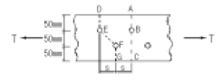
- s=114.9mm
- s=90.6mm
- s=66.3mm
- s=50mm
(정답률: 34%)
63. 강도설계에서 이형철근의 정착길이는 무엇과 반비례하는가?
- 철근의 공칭지름
- 철근의 단면적
- 철근의 항복강도
- 콘크리트 설계기준 강도의 평방근
(정답률: 19%)
64. 그림과 같은 용접부의 응력은?
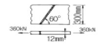
- 115 MPa
- 110 MPa
- 100 MPa
- 94 MPa
(정답률: 60%)
65. 철근콘크리트 단면의 휨강도와 거동을 강도설계법에 의해 계산하기 위한 가정 중 잘못된 것은?
- 콘크리트의 변형률은 중립축으로부터 직선으로 변한다.
- 휨강도의 계산에서 콘크리트의 인장강도는 무시한다.
- 철근의 최대 변형률은 0.003으로 가정한다.
- 변형전에 평면인 단면은 변형후에도 평면을 유지한다.
(정답률: 20%)
66. 자중을 포함한 계수등분포하중 75 kN/m을 받는 단철근 직사각형 단면 단순보가 있다. fck=24 MPa, 지간은 8m이고, b=350mm, d=550mm일 때, 다음 설명 중 옳지 않은 것은?
- 위험단면에서의 전단력은 258.8 kN이다.
- 콘크리트가 부담할 수 있는 전단강도는 157.2 kN이다.
- 부재축에 직각으로 스터럽을 설치하는 경우 그 간격은 275mm 이하로 설치하여야 한다.
- 전단철근이 필요한 구간은 지점으로부터 1.68m까지 이다.
(정답률: 50%)
67. 그림에 나타난 이등변삼각형 단철근보의 공칭 휨강도 Mn를 계산하면? (단, 철근 D19 3본의 단면적은 860mm2, fck=28MPa, fy=350MPa 이다.)
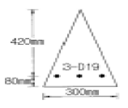
- 75.3 kN·m
- 85.2 kN·m
- 95.3 kN·m
- 1⑤.3 kN·m
(정답률: 34%)
68. 그림과 같은 원형철근기둥에서 콘크리트구조설계기준에서 요구 하는 최소 나선철근의 간격은 약 얼마인가? (단, fck=24MPa, fy=400MPa, D10철근의 공칭단면적은 71.3mm2이다.)
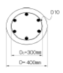
- 35 mm
- 40 mm
- 45 mm
- 70 mm
(정답률: 13%)
69. 슬래브와 보가 일체로 타설된 비대칭 T형보의 유효폭은 얼마인가? (단, 플랜지 두께 = 100mm, 복부폭 = 300mm, 인접보와의 내측거리 = 1600mm, 보의 경간 = 6.0m)
- 800mm
- 900mm
- 1000mm
- 1100mm
(정답률: 알수없음)
70. 강도설계법에서 fck = 30 MPa, fy = 350 MPa 일 때 단철근직사각형보의 균형철근비는?
- 0.0351
- 0.0369
- 0.0385
- 0.0391
(정답률: 50%)
71. 그림의 단면을 갖는 저보강 PSC보의 설계휨강도(φMn)는 얼마인가? (단, 긴장재 단면적 Ap=600mm2, 긴장재 인장응력 fps=1500MPa, 콘크리트 설계기준강도 fck=35MPa)
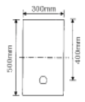
- 187.5 kN·m
- 225.3 kN·m
- 267.4 kN·m
- 293.1 kN·m
(정답률: 44%)
72. 그림과 같은 정사각형 독립확대 기초 저면에 작용하는 지압력이 q=100kPa 일때 휨에 대한 위험단면의 휨모멘트 강도는 얼마인가?
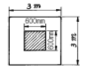
- 216 kN·m
- 360 kN·m
- 260 kN·m
- 316 kN·m
(정답률: 39%)
73. 압축부재의 나선철근에 대한 요건 중 틀린 것은?
- 현장치기 콘크리트공사에서 나선철근의 지름은 9mm이상으로 한다.
- 나선철근의 순간격은 25mm이상, 75mm이하이어야 한다.
- 나선철근의 이음은 철근지름의 48배이상, 또한 300mm이상의 겹침이음 또는 용접이음으로 하여야 한다.
- 나선철근의 정착은 나선철근의 끝에서 추가로 심부주위를 1회전만큼 더 연장한다.
(정답률: 8%)
74. bw=250mm이고, h=500mm인 직사각형 단면에 균열을 일으키 는 비틀림모멘트 Tcr은 얼마인가? (단, fck=28MPa 이다.)
- 9.8 kN·m
- 11.3 kN·m
- 12.5 kN·m
- 18.4 kN·m
(정답률: 10%)
75. 포스트텐션된 보에는 포물선 긴장재가 배치되었다. A단에서 잭킹(jacking)할 때의 인장력은 900kN 이었다. 강재와 쉬스의 마찰손실을 고려할 때 상대편 지지점 B단에서의 긴 장력 Px 는 얼마인가? (단, 파상마찰계수 k=0.0066/m ,곡률마찰계수 °=0.30/radian 이고, ≤=0.3⒡2/9=1/15 (ridian) 이며, 근사식을 사용하여 계산한다.)
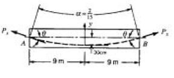
- 757 kN
- 829 kN
- 900 kN
- 1043 kN
(정답률: 13%)
76. PS강재의 탄성계수 Ep=200,000MPa, 콘크리트 탄성계수 Ec =30,000MPa, 콘크리트 건조수축률 εcs=18x10-5 일 때 PS 강재의 프리스트레스 감소율은 얼마인가? (단, 초기 프리스트레스는 1200MPa 이다.)
- 0.45%
- 2%
- 3%
- 4.5%
(정답률: 0%)
77. 콘크리트의 압축강도가 27MPa, 철근의 항복강도 400MPa, 폭이 350mm, 유효깊이가 600mm인 직사각형 보의 최소철근량은 얼마인가?
- 690 mm2
- 735 mm2
- 784 mm2
- 816 mm2
(정답률: 25%)
78. 단철근 보 단면에 하중이 재하됨과 동시에 순간처짐이 2mm 생겼다. 이하중이 지속적으로 작용할 때 추가로 생기는 장기처짐량은 얼마인가? (단, 여기서 하중은 5년 이상 지속적으로 재하된 것으로 본다.)
- 2mm
- 4mm
- 6mm
- 8mm
(정답률: 37%)
79. 아래 단철근 T형보에서 다음 주어진 조건에 대하여 등가응력의 깊이 a는 얼마인가? (조건 : b = 1000mm, t = 80mm, d = 600mm, As = 5000mm2, bw = 400mm, fck = 21MPa, fy = 300MPa)
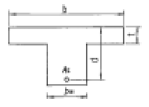
- 75mm
- 80mm
- 90mm
- 103mm
(정답률: 50%)
80. 일정한 두께의 1방향 Slab 에서 전단에 대한 위험 단면은?
- 지점에서 유효깊이 d만큼 떨어진 단면
- 최대모멘트가 작용하는 단면
- 지점
- 지점에서 d/2만큼 떨어진 단면
(정답률: 알수없음)
5과목: 토질 및 기초
81. 사면파괴가 일어날 수 있는 원인에 대한 설명중 적절하지 못한 것은?
- 흙중의 수분의 증가
- 굴착에 따른 구속력의 감소
- 과잉 간극수압의 감소
- 지진에 의한 수평방향력의 증가
(정답률: 47%)
82. 흙의 단위중량이 1.5t/m3인 연약점토지반(φ=0)을 연직으로 4m까지 절취할 수 있다고 한다. 이 점토지반의 점착력은 얼마인가?
- 1.0 t/m2
- 1.5 t/m2
- 2.0 t/m2
- 3.0 t/m2
(정답률: 43%)
83. 한 요소에 작용하는 응력의 상태가 그림과 같을 때 m-m면 에 작용하는 수직응력은?(문제 오류로 현재 복원중입니다. 보기 내용을 아시는 분들께서는 오류 신고를 통하여 보기 작성 부탁 드립니다. 정답은 1번입니다.)
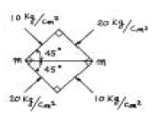
- 15kg/cm2
- 복원중
- 10kg/cm2
- 복원중
(정답률: 55%)
84. 흙의 다짐에 있어 램머의 중량이 2.5㎏, 낙하고 30㎝, 3층으로 각층 다짐회수가 25회 일때 다짐에너지는? (단, 몰드의 체적은 1000cm3이다.)
- 5.63㎏·㎝/cm3
- 5.96㎏·㎝/cm3
- 10.45㎏·㎝/cm3
- 0.66㎏·㎝/cm3
(정답률: 24%)
85. 입도분석 시험결과 다음과 같은 결과를 얻었다. 이 흙을 통일분류법에 의해 분류하면? (단, 0.074mm체 통과율=3%, 2mm체 통과율=40%, 4.75mm체통과율=65%, D10=0.10㎜, D30=0.13㎜, D60=3.2㎜)
- GW
- G
- SW
- SP
(정답률: 16%)
86. Vane Test에서 Vane의 지름 50㎜, 높이 10㎝ 파괴시 토오크가 590kg·cm일 때 점착력은?
- 1.29kg/cm2
- 1.57kg/cm2
- 2.13kg/cm2
- 2.76kg/cm2
(정답률: 10%)
87. 유선망을 작성하여 침투수량을 결정할 때 유선망의 정밀도가 침투수량에 큰 영향을 끼치지 않는 이유는?
- 유선망은 유로의 수와 등수두면의 수의 비에 좌우되기 때문이다.
- 유선망은 등수두선의 수에 좌우되기 때문이다.
- 유선망은 유선의 수에 좌우되기 때문이다.
- 유선망은 투수계수 K에 좌우되기 때문이다.
(정답률: 24%)
88. 다음 그림과 같은 점성토 지반의 굴착저면에서 바닥융기에 대한 안전율을 Terzaghi의 식에 의해 구하면? (단, 】=1.731t/m3, C=2.4t/m2 이다.)
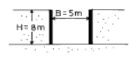
- 3.21
- 2.32
- 1.64
- 1.17
(정답률: 19%)
89. 그림과 같이 지하수위가 지표와 일치한 연약점토 지반위에 양질의 흙으로 매립 성토할 때 매립이 끝난후 매립후 지표로부터 5m 깊이에서의 과잉 간극수압은 약 얼마인가?
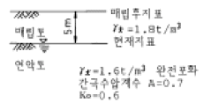
- 9.0t/m2
- 7.9t/m2
- 5.4t/m2
- 3.4t/m
(정답률: 42%)
90. 그림에 표시된 하중 q에 의한 최종압밀 침하량은 7.5㎝로 예상되어진다. 예상되는 최종압밀 침하량의 80%가 일어나는데 걸리는 시간은? (단, Cv = 2.54 x 10-4cm2/sec, T80 = 0.567)
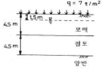
- 13.33년
- 14.33년
- 15.33년
- 16.33년
(정답률: 27%)
91. 지름 d = 20㎝인 나무말뚝을 25본 박아서 기초 상판을 지지하고 있다. 말뚝의 배치를 5열로 하고 각열은 등간격으로 5본씩 박혀있다. 말뚝의 중심간격 S = 1m이고 1본의 말뚝이 단독으로 10t의 지지력을 가졌다고 하면 이 무리 말뚝은 전체로 얼마의 하중을 견딜수 있는가? (단, Converse - Labbarre식을 사용한다.)
- 100t
- 200t
- 300t
- 400t
(정답률: 34%)
92. 토압론에 관한 다음 설명중 틀린 것은?
- Coulomb의 토압론은 강체역학에 기초를 둔 흙쐐기 이론이다.
- Rankine의 토압론은 소성이론에 의한 것이다.
- 벽체가 배면에 있는 흙으로부터 떨어지도록 작용하는 토압을 수동토압이라 하고 벽체가 흙쪽으로 밀리도록 작용하는 힘을 주동토압이라 한다.
- 정지 토압계수의 크기는 수동토압계수와 주동토압계수 사이에 속한다.
(정답률: 58%)
93. Terzaghi의 수정(修正) 지지력 공식 qult= 』CNc+βγ1BNr+γ2DfNq에 대한 다음 설명중 틀린 것은?
- α, β는 형상계수로서 기초의 형태에 따라 정해진다.
- γ1, γ2는 흙의 단위중량으로서 지하수위 아래에서는 수중 단위중량을 사용한다.
- Nc, Nr, Nq는 마찰계수로 마찰각과 점착력의 함수이다.
- 허용지지력 qa는 극한 지지력 qult의 1/3 을 취하는 것이 보통이다.
(정답률: 57%)
94. 다음 연약지반 개량공법에 관한 사항중 옳지 않은 것은?
- 샌드드레인 공법은 2차 압밀비가 높은 점토와 이탄 같은 흙에 큰 효과가 있다.
- 장기간에 걸친 배수공법은 샌드드레인이 페이퍼 드레인보다 유리하다.
- 동압밀공법 적용시 과잉간극 수압의 소산에 의한 강도 증가가 발생한다.
- 화학적 변화에 의한 흙의 강화공법으로는 소결 공법, 전기화학적 공법 등이 있다.
(정답률: 40%)
95. 다음 점토 광물중 입자 모양이 판상이 아닌 것은?
- Montmorillonite
- Illite
- Halloysite
- Kaolinite
(정답률: 36%)
96. 다음 흙의 다짐에 관한 설명으로 틀린 것은?
- 인공적으로 흙에 압력이나 충격을 가하여 밀도를 높이는 것을 다짐이라 한다.
- 최대건조밀도때의 함수비를 최적함수비라 한다.
- 영공기간극 곡선은 흙이 완전포화될때 함수비-밀도곡선을 말한다.
- 다짐에너지를 증가하면 최적함수비는 증가한다.
(정답률: 28%)
97. 흙의 모관상승에 대한 설명중 잘못된 것은?
- 흙의 모관상승고는 간극비에 반비례하고, 유효 입경에 반비례한다.
- 모관상승고는 점토, 실트, 모래, 자갈의 순으로 점점 작아진다.
- 모관상승이 있는 부분은 (-)의 간극수압이 발생하여 유효응력이 증가한다.
- Stokes법칙은 모관상승에 중요한 영향을 미친다.
(정답률: 37%)
98. 포화점토가 성토직후에 갑자기 파괴되는 경우에 대한 전단 강도를 구하는데는 다음의 어느 시험을 사용하는가?
- 비압밀 비배수 시험(UU Test)
- 압밀 비배수 시험(CU Test)
- 압밀 배수 시험(CD Test)
- 압밀 비배수 시험(CℓℓUℓTest)
(정답률: 50%)
99. 소성도표에 대한 설명 중 옳지 않은 것은?
- A선의 방정식은 Ip = 0.73(WL - 10)
- 액성한계를 횡좌표, 소성지수를 종좌표로 한다.
- 흙의 분류에 사용된다.
- 흙의 성질을 파악하는데 사용할 수 있다.
(정답률: 25%)
100. 어떤 모래층의 공극비(e)는 0.2, 비중(Gs)은 2.60이었다. 이 모래가 Quick - Sand - action이 일어나는 한계 동수경사(ic)는 다음중 어느 값인가?
- 1.33
- 0.95
- 0.56
- 1.80
(정답률: 50%)
6과목: 상하수도공학
101. 다음중 수격작용(Water Hammer)의 방지 또는 감소 대책에 대한 설명으로 틀린 것은?
- 펌프의 토출구에 완만히 닫을 수 있는 역지밸브를 설치하여 압력상승을 적게 한다.
- 펌프 설치 위치를 높게 하고 흡입양정을 크게 한다.
- 펌프에 플라이휠(Fly Wheel)을 붙여 펌프의 관성을 증가시켜 급격한 압력강하를 완하한다.
- 토출측 관로에 압력조절수조를 설치한다.
(정답률: 27%)
102. 활성슬러지법의 여러 가지 변법 중에서 잉여슬러지량을 현저하게 감소시키고 슬러지 처리를 용이하게 하기 위해 개발된 방법으로서 포기시간이 16∼24시간, F/M비가 0.03 ∼0.⑤kgBOD/kgSS·day 정도의 낮은 BOD-SS부하로 운전하는 방식은?
- 계단식 포기법
- 장기포기법
- 표준활성슬러지법
- 순산소포기법
(정답률: 34%)
103. 상수도의 계통을 올바르게 나타낸 것은?
- 취수 - 송수 - 도수 - 정수 - 급수 - 배수
- 취수 - 정수 - 도수 - 급수 - 배수 - 송수
- 도수 - 취수 - 정수 - 송수 - 배수 - 급수
- 취수 - 도수 - 정수 - 송수 - 배수 - 급수
(정답률: 47%)
104. 우수가 하수관거로 유입하는 시간이 4분, 하수관거에서의 유하시간이 10분, 이 유역의 유역면적이 0.4㎢, 유출계수는 0.6, 강우강도 i =6500/(t+40)mm/hr식일 때 첨두유량은? (단, t의 단위 : [분])
- 8.02m3/sec
- 80.2m3/sec
- 10.4m3/sec
- 104m3/sec
(정답률: 9%)
1⑤. 다음 상수의 도수 및 송수에 관한 설명 중 틀린 것은?
- 도수 및 송수방식은 에너지의 공급원 및 지형에 따라 자연유하식과 펌프압송식으로 나눌 수 있다.
- 송수관로는 수리학적으로 수압작용 여부에 따라 개수로 식과 관수로식으로 분류 가능하다.
- 펌프압송식은 수원이 급수구역과 가까울 때와 지하수를 수원으로 할 때 적당하다.
- 자연유하식은 평탄한 지형에서 유리한 방식이다.
(정답률: 15%)
106. 펌프의 비회전도(Ns)에 대한 설명으로 틀린 것은?
- Ns가 동일하면 펌프의 크기에 관계없이 같은 형식의 펌프로 한다.
- Ns가 적으면 유량이 적은 저양정의 펌프가 된다.
- 수량 및 전양정이 같다면 회전수가 많을수록 Ns가 크게 된다.
- Ns가 적을수록 효율곡선은 완만하게 되고 유량변화에 대해 효율변화의 비율이 작다.
(정답률: 43%)
107. 하수관거의 관정부식(crown corrosion)의 주된 원인이 되는 물질은?
- N 화합물
- S 화합물
- Ca 화합물
- Fe 화합물
(정답률: 20%)
108. 상수 원수에 포함된 색도 제거를 위한 단위 조작으로 가장 거리가 먼 것은?
- 폭기처리
- 응집침전처리
- 활성탄처리
- 오존처리
(정답률: 18%)
109. 슬러지 용적지수(Sludge Volume Index : SVI)에 대한 설명 으로 옳지 않은 것은?
- 슬러지의 침강농축성을 나타내는 지표이다.
- 폭기조 혼합액 1L를 30분간 침전시킨 후 1g의 활성슬러지 부유물질이 포함하는 부피를 나타낸 값이다.
- SVI가 크면 침강성이 좋고 낮으면 침강성이 나빠 팽화현상을 의심할 수 있다.
- 슬러지 밀도지수(Sludge Density Index : SDI)는 100/SVI 이다.
(정답률: 알수없음)
110. 활성슬러지법에서 MLSS란 무엇을 뜻하는가?
- 방류수 중의 부유물질
- 반송슬러지의 부유물질
- 폐수 중의 부유물질
- 폭기조 내의 부유물질
(정답률: 54%)
111. 슬러지 팽화(bulking)의 원인으로서 옳지 않은 것은?
- 영양물질의 불균형
- 유기물의 과도한 부하
- 용존산소량 불량
- 과도한 질산화
(정답률: 알수없음)
112. 다음 그림은 펌프 표준특성곡선이다. 펌프의 양정을 나타내는 곡선 형태는?
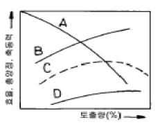
- A
- B
- C
- D
(정답률: 28%)
113. 우수가 하수거에 유입되기 전에 우수받이를 설치하는 주목적은?
- 하수거의 용량이상으로 우수가 유입되는 것을 차단하기 위하여
- 하수관에서 유속을 증가시켜주는 수두(水頭)를 조절하기 위하여
- 하수에서 발생하는 악취를 제거하기 위하여
- 우수내 부유물이 하수거 내에 침전하는 것을 방지하기 위하여
(정답률: 13%)
114. 어느 소도시의 20년후의 인구는 35000명으로 측정되었다. 현재 인구는 28000명이고 평균 물소비량은 16000m3/day 이며 현재의 상수공급시설은 19000m3/day의 설계용량을 가지고 있다. 등차급수적 추정법에 의해서 대략 몇 년후에 상수공급시설이 설계용량에 도달하는가? (단, 1일1인당 물 소비량은 변화가 없는 것으로 가정)
- 5년
- 7년
- 10년
- 15년
(정답률: 20%)
115. 하천의 자정계수(self-purification factor)에 대한 설명 으로 옳은 것은?
- [탈산소계수/재폭기계수]로 나타낸다.
- 저수지보다는 하천에서 그 값이 작게 나타난다.
- DO에 대한 BOD의 비로 표시된다.
- 유속이 클수록 그 값이 커진다.
(정답률: 31%)
116. 유입수량이 100m3/min, 침전지 용량이 5000m3, 침전지 유효수심이 4m일 때 수면부하율(m3/m2·day)은?
- 115.2
- 125.2
- 12.52
- 11.52
(정답률: 22%)
117. 폭기조에 가해진 BOD부하 1kg당 100m3의 공기를 주입시켜야 한다면 BOD가 150mg/L인 하수 7570m3/day를 처리하기 위해서는 얼마의 공기를 주입해야 하는가?
- 7570m3/day
- 11350m3/day
- 75700m3/day
- 113550m3/day
(정답률: 34%)
118. 배수관망 계산시 시산법(try and error method)을 사용하여 관망의 유량을 계산하는 방법은?
- Hardy Cross 법
- Kutter 법
- Horton 법
- Newman 법
(정답률: 34%)
119. 염소가 수중의 여러가지 불순물과 작용한 후에도 HOCl 이나 OCl-로 존재하는 염소를 무엇이라 하는가?
- 유리잔류염소
- 결합잔류염소
- 결합유효염소
- 염소요구량
(정답률: 24%)
120. 인구가 100,000명인 A 도시의 1일 1인당 오수량이 250L 이다. 하수를 처리하기 위해 유효수심 3m, 침전시간 2시간인 침전지를 설계하려고 할 때 침전지의 소요면적은?
- 347m2
- 521m2
- 695m2
- 1563m2
(정답률: 16%)